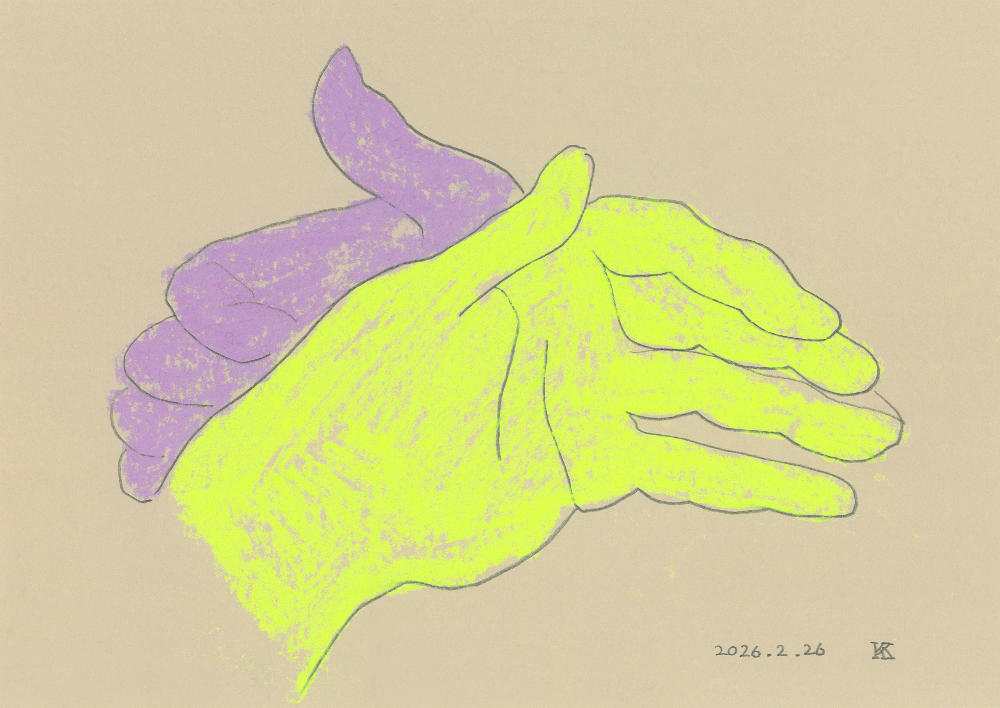
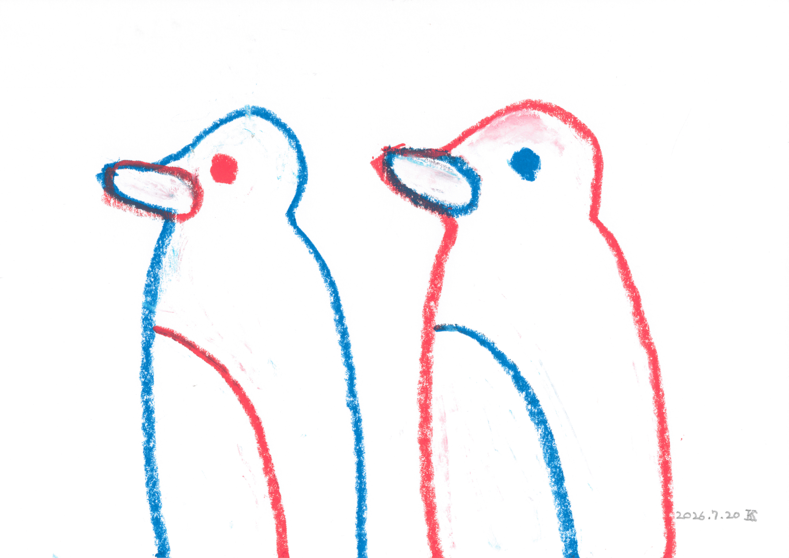
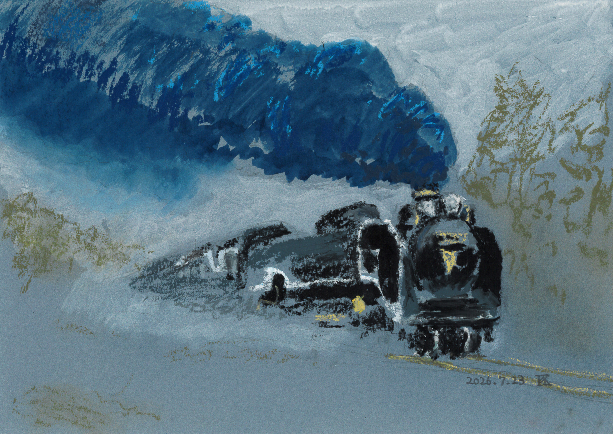
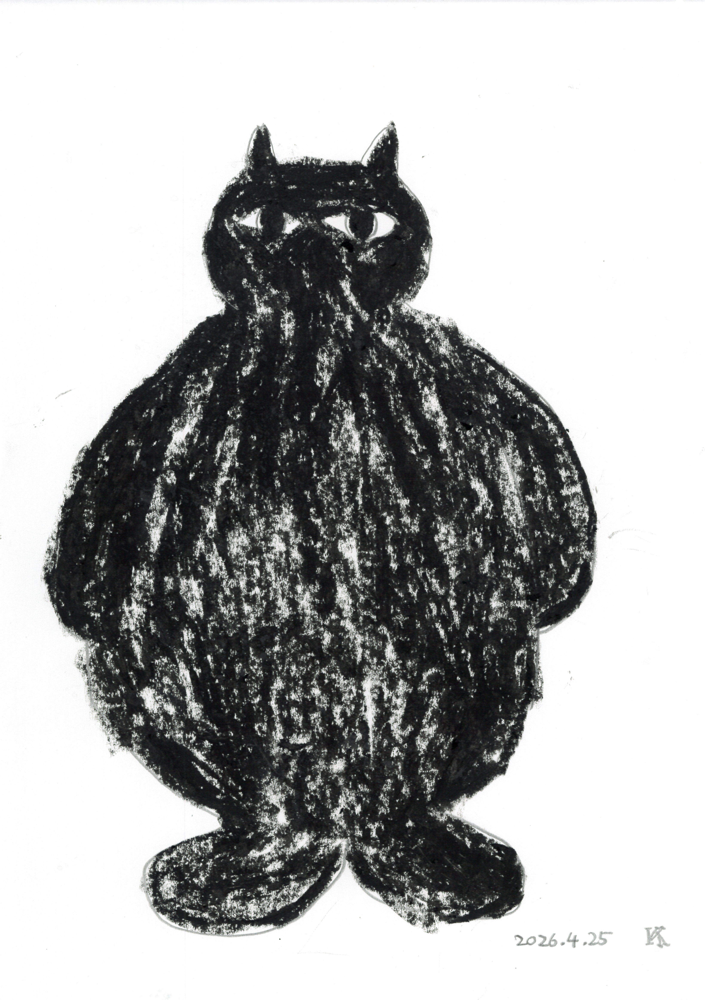
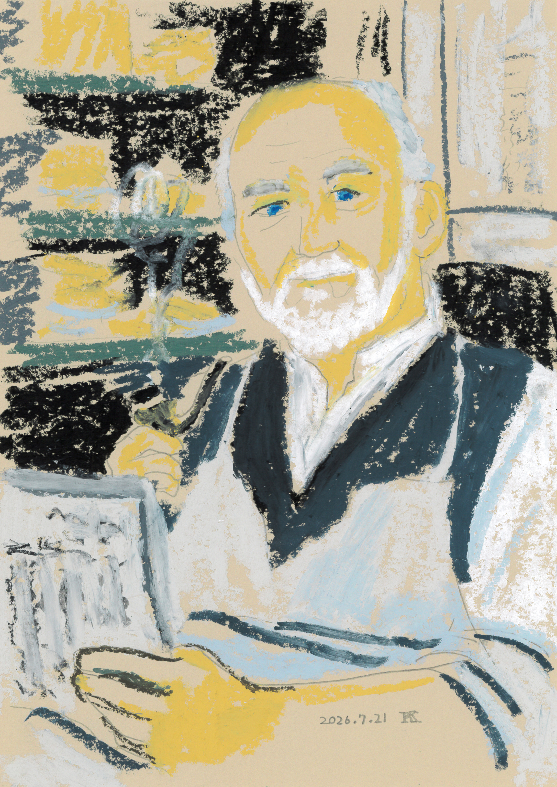
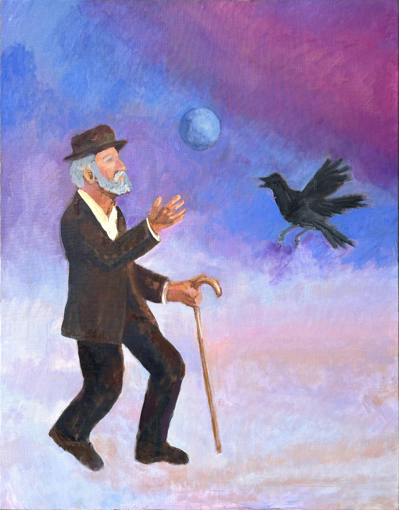
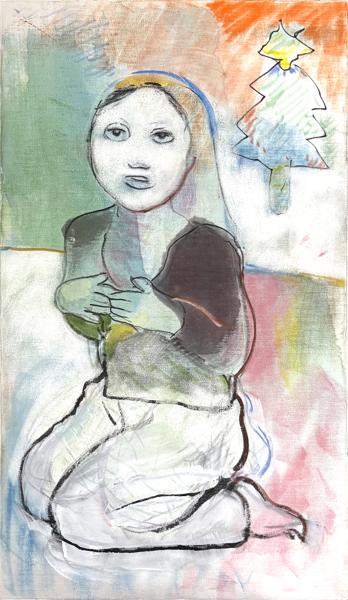
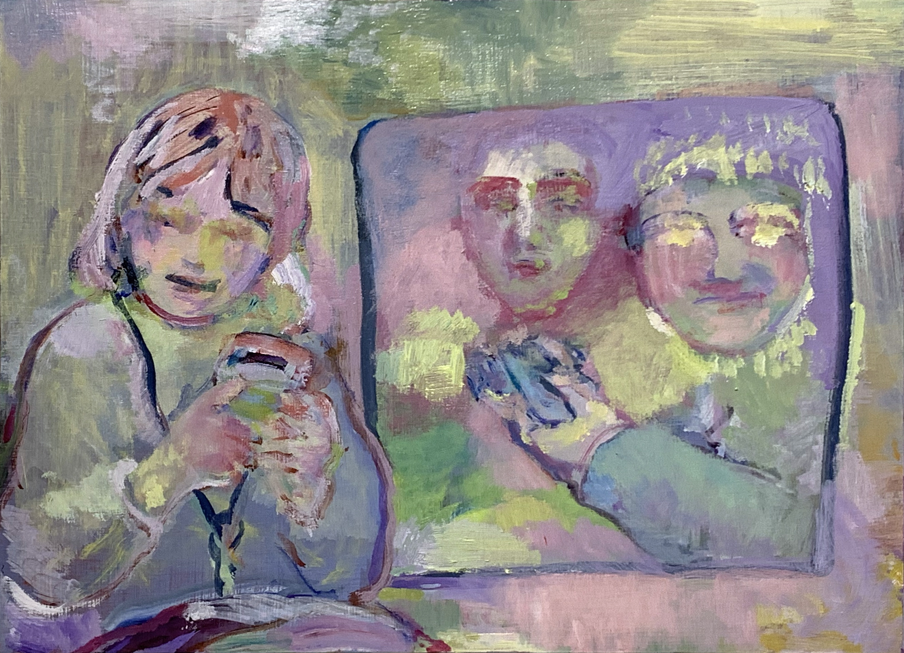
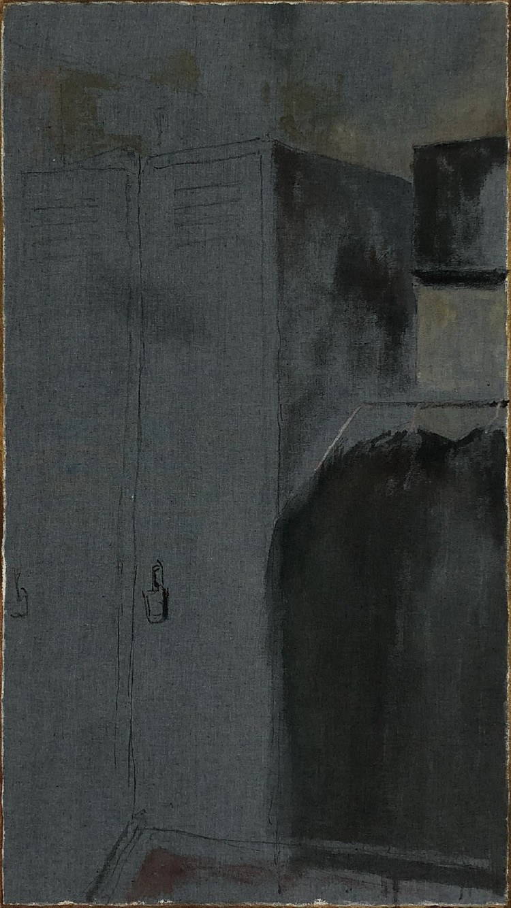
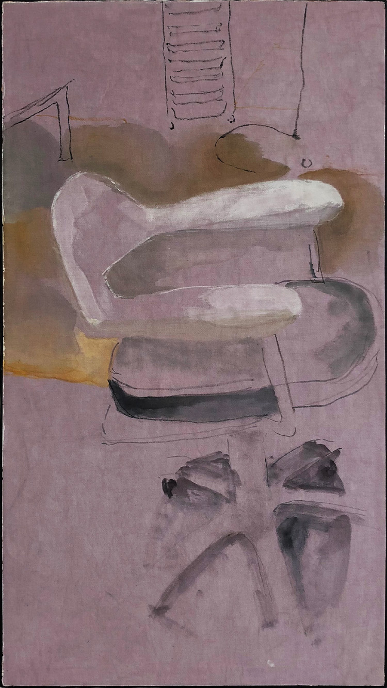

{kind=link}

世界が滅びないための色
The Color That Keeps the World from Ending
パステル、鉛筆、ミックスメディアペーパー
Pastel and pencil on mixed-media paper
Paintings / Drawings / Works
絵画とドローイングを中心に、記憶や知覚の中で変容したモチーフと、日常の色や情報が強い重要性を帯びる瞬間を探求しています。
Working primarily with painting and drawing, I explore motifs transformed through memory and perception, and the moments when everyday colours and fragments of information acquire heightened significance.

Upcoming Solo Exhibition
The Colors That Keep the World from Ending
2026.10.13 Tue – 10.18 Sun
A4ドローイングを中心とする15〜25点の連作を展示予定です。詳細と在廊予定は会期が近づき次第お知らせします。
The exhibition will present a series of approximately 15–25 A4 drawings. Further details and the artist’s attendance schedule will be announced closer to the opening.
Profile / Artist Statement
小林喜一郎（Kiichiro Kobayashi）。1995年神奈川県横浜市生まれ。愛知県岩倉市および名古屋市で育つ。2018年、武蔵野美術大学造形学部油絵学科油絵専攻卒業。
幼少期より絵画に親しみ、仏教美術や精神世界への関心を背景に制作を続けてきました。2007年には仏像彫刻家・松本明慶の工房でのワークショップに参加し、彫刻紋様などの基礎を学びました。大学在学中は、絵画に加えてパフォーマンスやミクストメディアにも取り組みました。
2018年の卒業制作《Real Clothes I–III》では、写真から抽出した色情報をもとに染色した布、描画、支持体の露出を一つの絵画構造に統合する方法を展開しました。2020年、《年賀状だけの関係が終わる。》（英題：The Rooster）が第22回グラフィック「1_WALL」ファイナリストに選出されました。
現在は絵画とドローイングを中心に、個人的な記憶や知覚の変化を出発点として、日常の中で「重要ではない」とされる色や情報が、意味や必然性を帯びて立ち上がる仕組みに関心を持っています。体験そのものを説明・再現するのではなく、意味が生まれる瞬間と判断の不安定さを、線、色、反復、素材と制作過程を通して画面の構造として提示することを試みています。
Kiichiro Kobayashi is a painter born in Yokohama, Japan, in 1995 and raised in Iwakura and Nagoya, Aichi Prefecture. He graduated in 2018 from the Department of Oil Painting, Faculty of Art and Design, Musashino Art University.
Kobayashi has worked with painting since childhood. Influenced by spirituality and Buddhist art, he participated in a workshop at the studio of Buddhist sculptor Myoukei Matsumoto in 2007, where he learned fundamental approaches to sculptural ornamentation. While at university, he explored painting alongside performance and mixed media.
His graduation project, Real Clothes I–III, brought dyed fabric, colour data extracted from photographs, drawing and visible support structures together within a single pictorial process. In 2020, his work The Rooster was selected as a finalist for the 22nd Graphic “1_WALL” competition.
Working primarily with painting and drawing, his current practice begins with personal memory and shifts in perception. He examines how colours and fragments of information that are ordinarily regarded as unimportant can suddenly acquire meaning, authority or a sense of inevitability. Rather than illustrating experience itself, he uses line, colour, repetition, material and process to present the unstable moment in which meaning emerges.
Selected works（画像をタップすると詳細表示）
Selected works (tap an image for details)
12 selected works

パステル、鉛筆、ミックスメディアペーパー
Pastel and pencil on mixed-media paper

透明水彩、ソフトオイルパステル、鉛筆、ミックスメディアペーパー
Transparent watercolour, soft oil pastel and pencil on mixed-media paper

クレヨン、鉛筆、コピー用紙
Crayon and pencil on copy paper

ソフトオイルパステル、鉛筆、ミックスメディアペーパー
Soft oil pastel and pencil on mixed-media paper

油彩、キャンバス
Oil on canvas

墨、パステル、ジェッソ、マーカー、透明水彩、クレヨン、膠、繊維用染料、綿布、木製パネル
Ink, pastel, gesso, marker, transparent watercolour, crayon, animal glue and fabric dye on cotton mounted on a wooden panel

油彩、木製パネル
Oil on wooden panel

アクリルガッシュ、三角チャコ、クレヨン、透明水彩、膠、繊維用染料、綿布、木製パネル
Acrylic gouache, tailor’s chalk, crayon, transparent watercolour, animal glue and fabric dye on cotton mounted on a wooden panel

三角チャコ、墨、透明水彩、膠、繊維用染料、綿布、木製パネル
Tailor’s chalk, ink, transparent watercolour, animal glue and fabric dye on cotton mounted on a wooden panel

墨、透明水彩、油彩、繊維用染料、綿布、木製パネル
Ink, transparent watercolour, oil and fabric dye on cotton mounted on a wooden panel

墨、透明水彩、油彩、繊維用染料、綿布、木製パネル
Ink, transparent watercolour, oil and fabric dye on cotton mounted on a wooden panel

墨、透明水彩、油彩、繊維用染料、綿布、木製パネル
Ink, transparent watercolour, oil and fabric dye on cotton mounted on a wooden panel
Education / Awards / Exhibitions
Links / Email
kiichiro.kobayashi.art@gmail.com
作品・展示に関するお問い合わせはこちらからお願いします。
For enquiries regarding artworks and exhibitions, please contact me by email.
{kind=link}
{kind=link}
{kind=link}
{kind=link}
{kind=link}
{kind=link}
{kind=link}
{kind=link}